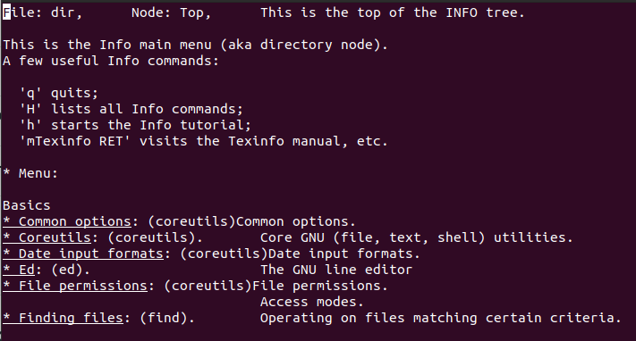

apropos
Linux/Unix comes with a huge number of commands, making it difficult to remember each one. The apropos command becomes useful in such cases. It helps users find commands when they remember only keywords related to the command's functionality. It searches the Linux man pages for the provided keyword.
Purpose
Provide a quick way to identify related commands, system calls, library functions, or topics.
Usage
apropos [OPTION..] KEYWORD...
Example:

Common Use Cases
- Quickly finding the correct command or function for a specific task.
- Exploring related tools or commands based on a topic.
- Learning about available system functionality without knowing specific command names.
alias
In Linux, an alias is a user-defined shorthand for a longer command or sequence of commands. These aliases can be created and customized according to user preferences, making the command-line interface more user-friendly. The alias command instructs the shell to replace one string with another string while executing the commands.
When we often have to use a single big command multiple times, in those cases, we create something called an alias for that command. Alias is like a shortcut command, which will have the same functionality as if we were writing the whole command.
Purpose
To create shortcuts for frequently used or lengthy commands, allowing users to execute them with simpler, custom-defined keywords.
Usage
alias shortname='longer command
Examples
Common Use Cases
- Monitoring disk usage on critical partitions (/, /var, /home).
- Planning for storage upgrades.
- Identifying filesystems with unusual usage patterns.
- Managing storage in multi-user environments.
info
The info command provides detailed information about various commands and utilities, offering easier navigation compared to man pages.
Purpose
The info command provides detailed information about various commands and utilities, offering easier navigation compared to man pages.
Usage
info [OPTION]... [MENU-ITEM...]
Example:

Common Use Cases
- Learning the options and flags for a new command.
- Reviewing more complex command syntaxes that are not always well-documented in quick references.
- Understanding how commands can be combined or used with other utilities.
uname
The ‘uname’ command provides key details about your Linux machine, such as the kernel name, version, and architecture.
Purpose
It is used to display system information, such as the kernel name, version, and architecture of the machine.
Example:
Common Use Cases
- Learning the options and flags for a new command.
- Confirming the operating system and kernel before installing or updating drivers.
- Writing cross-platform scripts that adapt based on uname outputs.
- Verifying the system's architecture (e.g., x86_64 vs. ARM) for application deployments.
du
The du command provides a detailed report of disk space usage by files and directories.
Purpose
The primary purpose of the du command is to provide a detailed report of disk space usage by files and directories.
Usage
du [OPTIONS] [DIRECTORY/FILE]
Example:

Common Use Cases
- Identify Large Files or Directories: Use du -h --max-depth=1 / to locate disk space hogs.
- Monitor Log File Growth: Use du -sh /var/log/* to check log file sizes.
- Analyze User Data: Use du -h --max-depth=1 /home to assess user disk usage.
- Estimate Backup Sizes: Use du -sh /backup to calculate backup size.
man
The “man” command allows users to access detailed information about various commands, utilities, and system calls.
Purpose
Provides detailed information about command usage, options, and syntax.
Usage
Syntax: man [OPTION] [COMMMAND]
Example:

Common Use Cases
- View command documentation: man [command] (e.g., man ls) to understand how a command works.
- Learn command options: Use man [command] to explore different flags and arguments available for a command.
- Troubleshoot: Use the man command to resolve issues by understanding the behavior and limitations of commands.
mount
The mount command is used to attach a removable storage device or filesystem to an existing directory, making them accessible.
Purpose
Connect storage devices to the system so their contents can be accessed.
Usage
mount [OPTIONS] DEVICE DIRECTORY
Example:

Common Use Cases
- Mounting External Storage: Attach USB drives, external hard drives, or SD cards to the system.
- Mounting Network Shares: Access remote filesystems via NFS, SMB, or other protocols.
- Mounting ISO Images: Mount CD/DVD or disk image files (.iso) to access their contents.